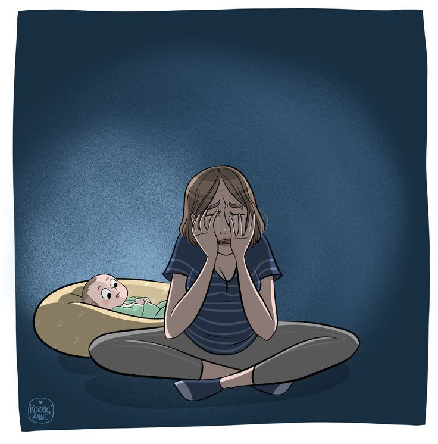
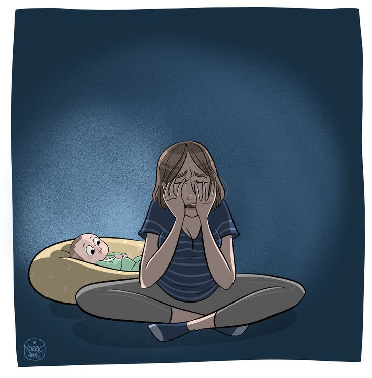

Connect with Moms and Feel Snugged!
"Welcome to our community moms! Join us to celebrate the joys and challenges of motherhood together!"
Pregnancy
"Pregnancy is a unique journey filled with excitement and anticipation. Each week brings new milestones and questions as your body changes. Here, you'll find resources for every trimester, including tips on managing morning sickness, understanding prenatal appointments, and preparing for labor. Whether you’re a first-time mom or expanding your family, we’re here to provide support and connect you with other moms."

 

Postpartum
Self-Care & Emotional Support 💕
Welcome to the postpartum section, a space where moms can connect, share, and find the support they need during recovery after childbirth.
Self-Care Tips for Moms:
- Make time to rest whenever possible. A well-rested mom is a healthier mom.
- Stay hydrated and eat nourishing meals to help your body heal.
- Don’t hesitate to ask for help—whether it’s from a partner, family, or friends.
Emotional Support:
- Remember, it’s okay to feel overwhelmed or emotional. Postpartum hormones can affect your mood.
- Talk about your feelings with loved ones or join a mom community for support.
- Seek professional help if you feel down for extended periods—postpartum depression is common, and help is available.
Every mom's journey is unique. Whether you're thriving or finding it challenging, you are not alone. You've got this, Mama! 💖
Physical Recovery Tips:
-
Vaginal Soreness:
- Sit on a pillow or padded ring.
- Cool the area with an ice pack. Or put a chilled witch hazel pad between a sanitary napkin and the area between your vaginal opening and anus.
- Sit in a warm bath just deep enough to cover your buttocks and hips for five minutes. Use cold water if it feels better.
- Talk to your healthcare professional about using a stool softener. Or ask about taking a laxative. Those medicines may help prevent problems with bowel movements — a condition called constipation.